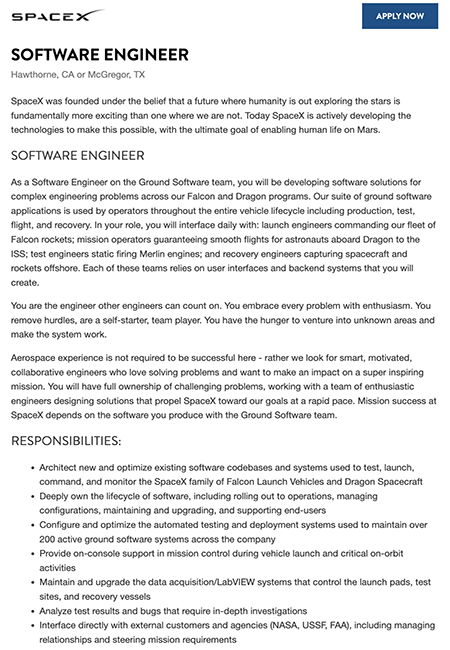

Ideal Job
SpaceX Position LinkThe position I have listed is a software engineer role at SpaceX, after reading about where my interests in IT not necessarily came from but where they were definitely sparked by. It should come as no surprise that SpaceX is a company I aspire to work for.
It is a software engineer's role at SpaceX to create new and maintain existing systems across the Falcon launch vehicle and Dragon family of spacecraft, as well as perform on-site support in mission control during vehicle launch. With Starship and SpaceX's pursuit of Mars looking more and more like a reality by the day, being part of a company at the forefront of technological innovation and that has such a passion for the future of mankind would be a dream come true.
The preferred skills and qualifications for a role working with such expensive systems and in some launch scenarios systems where failure could mean the loss of life, are understandably quite extensive. It requires a Bachelor's degree with at least 5 years professional experience. A broad and in-depth knowledge of software engineering principles, networking, debugging and the ability to carry out work accurately in high stress environments such as launch operations. It is preferred to have several years experience in LabView's graphical programming environment as well as with Python, C++ or other object-oriented language.
As a student with no previous experience these are all skills that I will need to develop over time. This is by no means a job I will be able to fill directly out of university, as mentioned above at least 5 years of professional experience is required with chunks of that experience requirement allocated to particular skill sets. Given that it is not always guaranteed to land an ideal role within a company but often they can require working up to, I anticipate it to take considerably longer than 5 years to achieve the necessary skills and qualifications required for a successful application at a company like SpaceX.
 Next Page